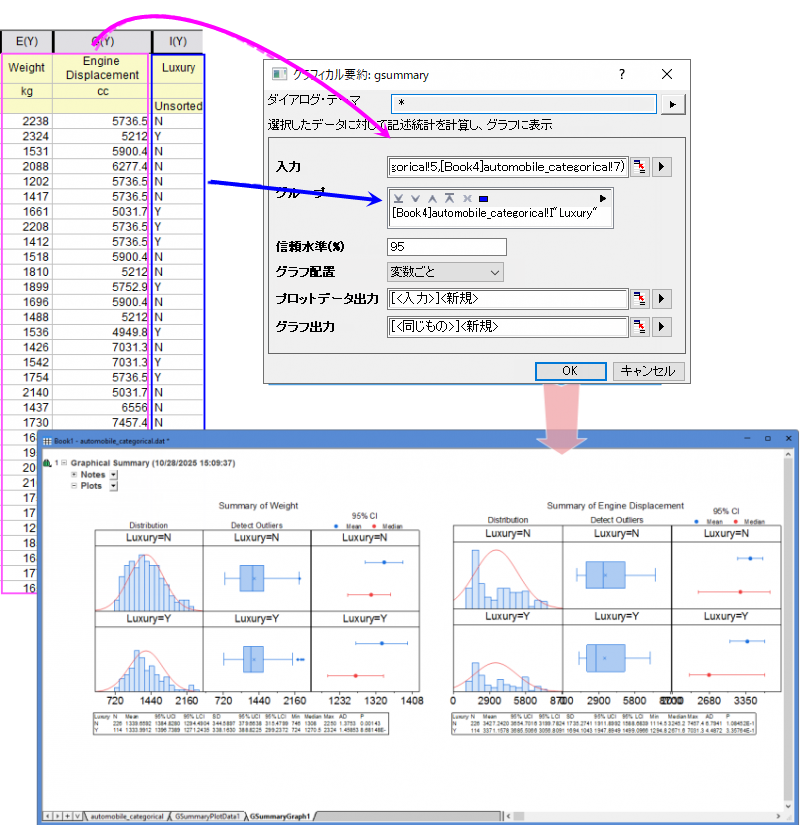
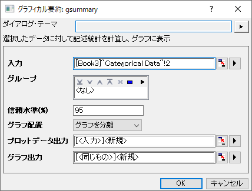

グラフィカル要約
Graphical-Summary
はじめに
このツールは、入力データの統計情報を含むグラフィカルサマリーレポートを作成するために使用できます。レポートには、ヒストグラムプロット、ボックスチャート（箱ひげ図）、信頼区間プロット、統計情報を含む結果テーブルが含まれます。

グラフィカル要約を実行
- 基本統計解析を実行したい入力データ列を選択します。
- 統計 > 記述統計：グラフィカル要約メニューを選択して、ツールを開きます。

- グループ を選択し、信頼水準(%)ボックスに値を入力し、グラフ配置リストで希望する配置を選択します。
- OKをクリックして、記述統計を確認し、グラフを作成します。
ダイアログの設定
| 入力 |
入力列を選択します。 |
| グループ |
入力データを複数のグループに分割するためのグループ列を選択します。 |
| 信頼区間(%) |
信頼区間の信頼水準を指定します。 |
| グラフ配置 |
統計グラフの配置方法を指定します。
- グラフを分離: 各変数とグループごとに個別のグラフを作成します。各グラフには、分布曲線付きのヒストグラム、信頼区間プロット、確率プロットが含まれ、3つの結果テーブル「記述統計」、「##% 信頼区間」、および「正規性テスト」が表示されます。グラフのタイトルには変数とグループ情報が表示されます。
- 変数ごと: 各変数ごとに個別のグラフを作成します。グループは異なる縦方向のパネルにプロットされます。各グラフには、分布曲線付きのヒストグラム、外れ値を含む箱ひげ図、信頼区間プロット、および各グループの統計情報を行ごとにまとめたテーブルが表示されます。
- グループごと: 各グループごとに個別のグラフを作成します。変数は異なる縦方向のパネルにプロットされます。各グラフには、分布曲線付きのヒストグラム、外れ値を含む箱ひげ図、信頼区間プロット、および各変数の統計情報を行ごとにまとめたテーブルが表示されます。
- オールインワン: すべての変数とグループを1つのグラフにプロットします。 各サブセット（グループ * 変数）は異なる縦方向のパネルにプロットされます。このグラフには、分布曲線付きのヒストグラム、外れ値を含む箱ひげ図、信頼区間プロット、およびサブセットごとの統計情報を行ごとにまとめたテーブルが表示されます。
|
| プロットデータ出力 |
プロットデータを出力する場所を指定します。 |
| グラフ出力 |
結果グラフを出力する場所を指定します。 |